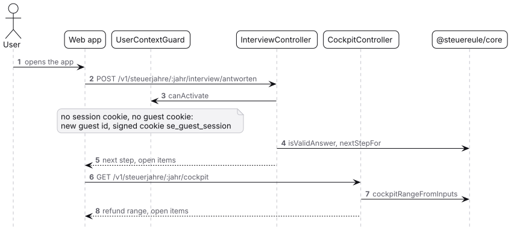
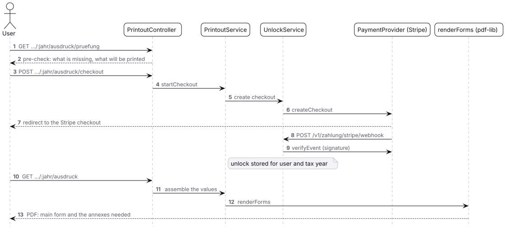
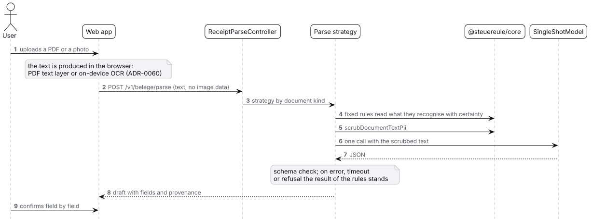

6.1 From guest to cockpit

(source: guest-to-cockpit.puml)
The guard is the only place that sets the user id of a request (auth/user-context.guard.ts). No route issues a guest session: the first guarded request without a cookie creates one. Routes marked @RequiresAccount() reject guests, among them the wage tax certificate and the detailed tax estimate. When the guest creates an account, auth/guest-account-upgrade.prisma.ts moves their data in one transaction (ADR-0012, ADR-0045).
6.2 Unlocking and printing

(source: unlock-and-print.puml)
The price is not in the code; it is a price id in the configuration. renderForms writes into the official PDF templates with pdf-lib and throws when a value does not fit its box.
6.3 Reading a receipt

(source: reading-a-receipt.puml)
Three lines of defence come before the model. For the Swiss salary certificate and the wage tax certificate only an allowlist of rows leaves the server (ADR-0058), and the model is asked only when the fixed rules left a field empty. Then scrubDocumentTextPii removes names, addresses and identifiers. Finally checkPiiFree aborts if the text still contains an IBAN or a tax id. Values from OCR never count as read with certainty and have to be confirmed.
Each strategy's parse() is a short sequence of named steps: read with the fixed rules, fill gaps with the model, decide whose document it is, stage the drafts, build the response. The steps several strategies share live in receipt/parse/document-parse-steps.ts: resolveVisionModel (kill switch and vision_ocr slot), isolateGrounding (scrubDocumentTextPii, then checkPiiFree), extractWithModel (one call through the SingleShotModel port with a timeout, then JSON extraction and the zod schema), and the response pieces (stagingEngine, yearConflictOf, noTaxYearReason, stagedDraftsOf). The pure steps of the receipt strategy (kind: 'auto') are in receipt/parse/auto-receipt-steps.ts.